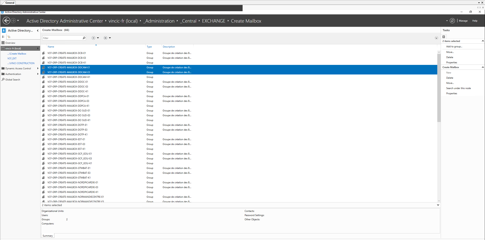
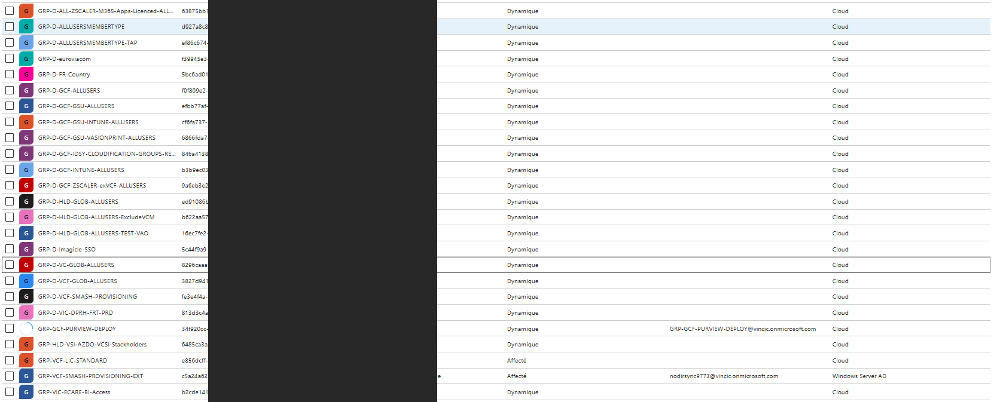
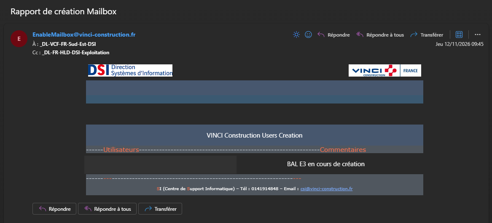

Contexte
L'arrivée d'un nouveau collaborateur déclenche côté service informatique une chaîne d'actions destinée à lui fournir son environnement de travail. Mon N+1 m'a confié la création du compte utilisateur pour un nouvel arrivant : c'est le socle sur lequel reposent ensuite l'ensemble des accès métier (messagerie, partages, applications).
Déroulé technique
Étape 1 — Accès à l'Active Directory
Je me suis connecté à l'Active Directory et
j'ai suivi le chemin suivant depuis la console Active Directory
Administrative Center :
vincic-fr (local) → _Administration → _Central → EXCHANGE
→ Create Mailbox. Ce nœud regroupe les
groupes de création de boîtes aux lettres,
nommés par délégation et par type de licence.
Étape 2 — Choix du type de licence Microsoft
L'étape qui demande une décision côté administrateur est le choix du type de licence Microsoft (E1 ou E3) à attribuer au nouvel arrivant. Ce choix dépend du profil du collaborateur (besoins d'outils collaboratifs, de messagerie, d'applications bureautiques, etc.) et conditionne ensuite l'ensemble des services Microsoft 365 auxquels il aura accès. Le groupe correspondant à la bonne délégation et au bon type de licence est sélectionné depuis la liste.

Create Mailbox : sélection du groupe correspondant à la délégation et au type de licence (E1 / E3).Étape 3 — Exécution du script de création
Le choix de la licence déclenche automatiquement un script interne. Ce script réalise les actions suivantes sans intervention supplémentaire :
- création du compte dans l'Active Directory ;
- intégration du compte aux groupes AD
pertinents en fonction de trois critères :
- son service ;
- sa délégation ;
- sa position géographique.
Cette automatisation assure que chaque compte créé respecte les règles d'habilitation définies par l'entreprise, sans risque d'oubli de groupe ni d'incohérence entre les différents comptes du même profil.

Confirmation et suite
Une fois le script terminé, un mail de confirmation est reçu, indiquant que le compte a bien été créé. Ce retour clôt la partie identité du processus d'arrivée et permet d'enchaîner sur les étapes suivantes côté matériel et accès applicatifs.

Conclusion
La création d'un compte utilisateur suit un workflow semi-automatisé : la décision humaine se concentre sur le choix de la licence, et le script prend ensuite en charge la partie répétitive et sensible aux erreurs (création, groupes AD). Cette mission m'a permis de pratiquer la gestion des identités à l'échelle d'un grand groupe et de comprendre l'intérêt d'une automatisation des opérations courantes pour garantir la cohérence du référentiel et appliquer le principe de moindre privilège (chaque utilisateur ne dispose que des accès dont il a besoin).
Compétences validées
Cette situation valide les compétences suivantes du référentiel (Annexe 8-1) :